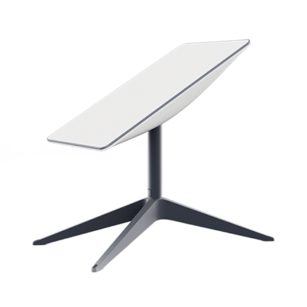

Identitas Pembuat
NIM: 607012300090
Nama Mahasiswa: Hanif Ikhsan Kusumah
Kelas: D3SI-47-03
Foto Mahasiswa Pembuat Web
Mata Kuliah
Nama Mata Kuliah : Arsitektur dan Jaringan Komputer
Nama Dosen : Tedi Gunawan
Router

Router adalah perangkat keras atau perangkat lunak yang mengarahkan lalu lintas data antara dua atau
lebih jaringan komputer. Ini bertindak sebagai titik pintu antara jaringan lokal Anda dan internet,
meneruskan paket data di antara mereka.